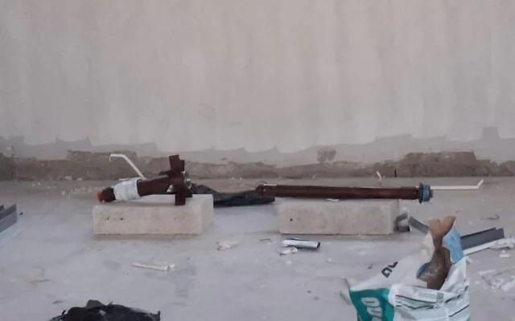

El-Sayed’s candidacy split Michigan Jews, and the community is reeling
Despite sharing some of his Israel-policy critiques, Jews have a hard time rallying around Senate candidate, with some convinced he wants to sever their ties to the Jewish state
Despite sharing some of his Israel-policy critiques, Jews have a hard time rallying around Senate candidate, with some convinced he wants to sever their ties to the Jewish state
Following an act of vandalism committed on 1 November in northern Israel against a Maronite prayer hall in Nahariya, the Maronite Archeparchy of Haifa firmly asserts that "such acts can neither be justified nor tolerated" and calls on the authorities to conduct an investigation.

Bob Dylan blows in for meeting with Pope Leo at Vatican Reuters
Israeli President Isaac Herzog on Thursday begins consultations with political parties to determine who should be given the mandate to form the country's next government, after a general election produced no clear winner. Read all

Investigators claim the suspects constructed crude explosive which they intended to launch into Israel
Baroness Altmann ‘begged’ ministers to ‘understand the danger of singling out Israel for special punishment’
Grandson of a vegetable seller in Egypt, raised by an imam father and a Michigan-born stepmother: The mult The Economic Times
Sheikh Zayed Grand Mosque Centre organises Flag Day event with Al Falah Academy in Abu Dhabi www.wam.ae
Bilal Erdoğan gives adhan at Ayasofya Mosque in Japan Yeni Şafak English
Shafaq News..Historic Damascus mosque reopens after 15-year closure شفق نيوز
'Same hatred of Jews still exists': Berlin synagogue hosts global warning against rising antisemitism Ynetnews
Motive still under investigation in Michigan synagogue attack as fuller timeline emerges ABC News - Breaking News, Latest News and Videos
Canada narrowly avoided Yom Kippur synagogue ‘massacre,’ survivors say JNS.org
Brick thrown through Brussels synagogue window JNS.org
Catholic nuns' visit to Buddhist temple sparks debate in Vietnam Global Sisters Report
Ulverston Buddhist temple offers free tours and meditation sessions for a day NW Mail
Etwas Bestimmtes gesucht? Alle Meldungen durchsuchen.